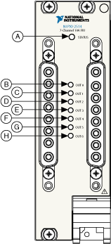

The following figure illustrates the NI PXI/PXIe-2514 front panel.

| Item | Description | |
|---|---|---|
| A | Module Status Indicator | LED |
| B | DUT0 Status Indicator | LED |
| C | DUT1 Status Indicator | LED |
| D | DUT2 Status Indicator | LED |
| E | DUT3 Status Indicator | LED |
| F | DUT4 Status Indicator | LED |
| G | DUT5 Status Indicator | LED |
| H | DUT6 Status Indicator | LED |
Status indicators on the front panel of the NI PXI/PXIe-2514 provide feedback about device operation.
Use the following table to determine the state of the module using the status indicator.
| Status Indicator | Auxiliary Power Input State |
|---|---|
| Green | OK, no channel errors present. |
| Red | Error detected on one or more channels. |
Use the following table to determine the state of DUTn channel using a status indicator.
| Status Indicator | Channel Output State |
|---|---|
| (Off) | Open |
| Green | Pass-through channel closed (CHn to DUTn) |
| Blink Amber Once | DUTn connected to fault bus A |
| Blink Amber Twice | DUTn connected to fault bus B |
| Solid Amber | Any combination of multiple DUTn paths closed (CHn,BusA, BusB) |
| Blink Red Once* | Overtemperature error detected on DUTn |
| Solid Red** | Overcurrent error detected on DUTn |
| *Overcurrent condition does not exist at the time the overtemperature condition was detected. **Overtemperature condition might or might not exist. |
|